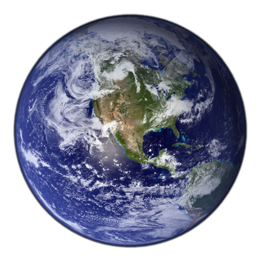
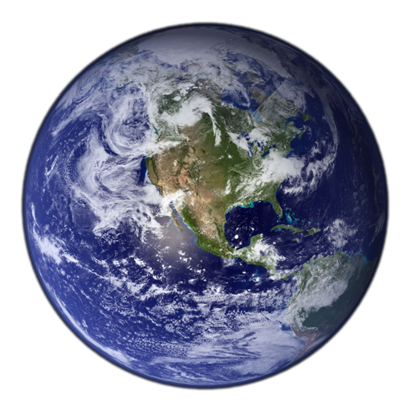

The smallest planet in our solar system and nearest to the Sun, Mercury is only slightly larger than Earth's Moon. From the surface of Mercury, the Sun would appear more than three times as large as it does when viewed from Earth, and the sunlight would be as much as seven times brighter. Despite its proximity to the Sun, Mercury is not the hottest planet in our solar system – that title belongs to nearby Venus, thanks to its dense atmosphere.
Second planet from the Sun and our closest planetary neighbor, Venus is similar in structure and size to Earth, but it is now a very different world. Venus spins slowly in the opposite direction most planets do. Its thick atmosphere traps heat in a runaway greenhouse effect, making it the hottest planet in our solar system—with surface temperatures hot enough to melt lead. Glimpses below the clouds reveal volcanoes and deformed mountains.
Our home planet is the third planet from the Sun, and the only place we know of so far that’s inhabited by living things. While Earth is only the fifth largest planet in the solar system, it is the only world in our solar system with liquid water on the surface. Just slightly larger than nearby Venus, Earth is the biggest of the four planets closest to the Sun, all of which are made of rock and metal.
The fourth planet from the Sun, Mars is a dusty, cold, desert world with a very thin atmosphere. This dynamic planet has seasons, polar ice caps, extinct volcanoes, canyons and weather. Mars is one of the most explored bodies in our solar system, and it's the only planet where we've sent rovers to roam the alien landscape.
Jupiter has a long history surprising scientists—all the way back to 1610 when Galileo Galilei found the first moons beyond Earth. That discovery changed the way we see the universe. Fifth in line from the Sun, Jupiter is, by far, the largest planet in the solar system – more than twice as massive as all the other planets combined.
Saturn is the sixth planet from the Sun and the second largest planet in our solar system. Adorned with thousands of beautiful ringlets, Saturn is unique among the planets. It is not the only planet to have rings—made of chunks of ice and rock—but none are as spectacular or as complicated as Saturn's.